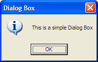
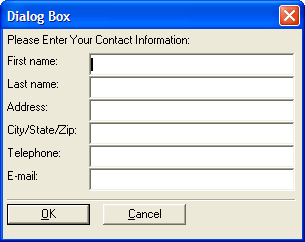

Dialog Boxes
Dialog boxes are common in Windows and other software applications, and are typically used for either displaying information, or eliciting a response from a user.

A Simple Dialog Box
In the example above, the user receives information, and clicks OK to close the dialog. A more complex dialog box might prompt the user to enter specific information:

A Dialog Box Asking for Information
Alpha Anywhere makes extensive use of dialog boxes, and through Xdialog (Alpha Anywhere's scripting language for creating dialog boxes) developers can create detailed and dynamic user interfaces using dialog boxes.
You'll see dialog boxes throughout Alpha Anywhere, so it is important to be familiar with them.
See Also
Editing System Menus, Setting the Form's Menus